The Ecological Records PlugIn add-on is a framework for creating and recording systemtic surveys.
Survey Design - This is the template for the survey data collection. This includes the survey properties, mission properties, and sampling unit definition, but not any data. The data associated with a survey design is represented by surveys and missions.
Survey - A collection of missions that represent a single complete set of survey data (visiting all sampling units making required observations). A survey may be of any length and may consist of one or more missions. Each survey is associated with a survey design.
Users can use the survey/survey design relationship in multiple ways. For cases where the survey design may only change slightly over time, a single survey design can be created and reused for multiple surveys (the design can be updated over time, adding new attributes/sampling units as required). This method is preferred if cross-survey querying is required. Users will easily be able to query across all surveys with the same design.
A second method would be to create a new survey design for each survey. In this case, query options will be limited (for cross survey querying). Users will only be able to query across properties that are applicable to all surveys (data model, dates, etc.) but NOT survey design specific properties (sampling units).
Mission - Represents the act of going out into the field to gather survey information. Missions generally involve a group of members visiting one or more sampling units and making a collection of observations. Each mission is associated with a survey.
Sampling Unit - A sampling unit is a transect or plot where observations are made one or more times. Plots may occur along a transect.
Sampling Unit Attribute - An attribute associated with the sampling unit. There is one attribute per unit, so a linear sampling unit will only have one attribute (instead of one attribute per coordinate).
Configurable Model - This is a view of a SMART Conservation Area data model. Configurable models allow users to reconfigure data models into views that are specific for a given survey. Users can add, remove, and move items; and provide default values for attributes.
For the purposes of a survey design, users can only select a single configurable model. This model should include the items from the data model that are of interest for all of the survey design’s purposes and missions.
Incident (Waypoint) - An incident is a set of one or more observations, associated with a date and time, and an explicit geographic location.
Observation - An observation is a direct sighting or sign of an entity (animal, plant, habitat, etc.). Each observation consists of a data model category and the category’s associated attributes. Therefore, the information captured in the observation is directly related to how the data model is configured.
| Menu | Description |
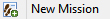 |
Creates new missions once a Survey Design has been created. The wizard will create a new Survey or provide an option to select a previously created Survey. |
| Creates a new Survey | |
| Opens a wizard to create a new Survey Design | |
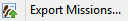 |
Exports Missions |
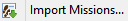 |
Imports Missions |
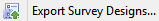 |
Exports Survey Designs |
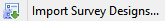 |
Imports a Survey Design |
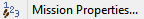 |
A list of all possible mission properties for the Conservation Area |
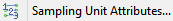 |
A list of all possible sampling unit attributes for the Conservation Area |
| Views all surveys, survey designs and missions |
The Ecological Records Plugin requires users to configure attributes and create the necessary templates and frameworks before any data collection can take place.
Steps in Creating Ecological Records (Surveys)
Any attributes associated with Missions or Sampling Units are generally configured before the Survey Designs, Surveys and Missions are created.
Note: Setting up Missions and Sampling Units are not mandatory requirements.
Mission and Sampling Unit attributes are created using the same procedures as used to create data model attributes.
Mission Properties
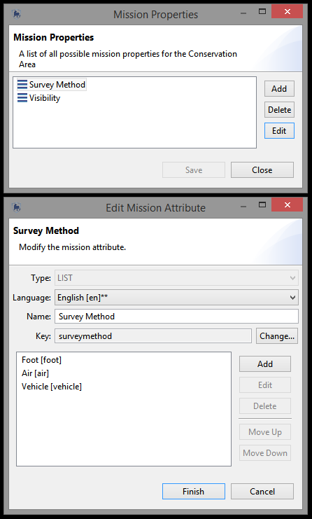
Mission Property attributes are created in the same way as Data Model attributes.
Mission Property attribute data types can be: numeric, text or list.
Survey Designs are the templates that Surveys and Missions depend upon. Survey Designs can be linked to multiple Surveys and Missions. Once a Survey Design has been created, then Surveys and Missions can be developed.
A wizard will guide users through the process of developing a Survey Design.
Summary Tab
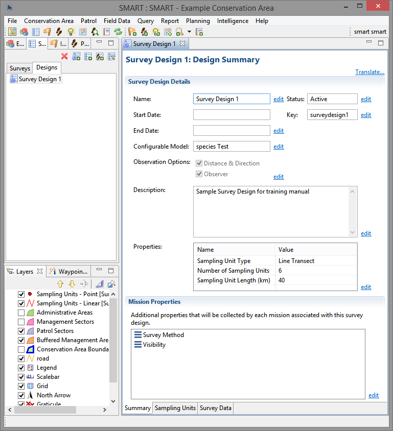
Name - name of the Survey Design
Start Date - start date of the Survey Design
End Date - end date of the Survey Design
Configurable Model - an option to chose a configurable data model instead of the Conservation Area data model
Observation Options - an option to use extra attributes of Distance & Direction and/or Observer
Description - a description of the Survey design
Properties - additional attributes specifically configured for the Survey Design
Status - survey designs can be designated as Active or Inactive
Key - the primary key of the survey designs
Mission Properties - additional properties that will be collected by each mission associated with this survey design
Sampling Units Tab
In the Sampling Units tab users can import, export and modify the Sampling Units associated with the Survey Design.
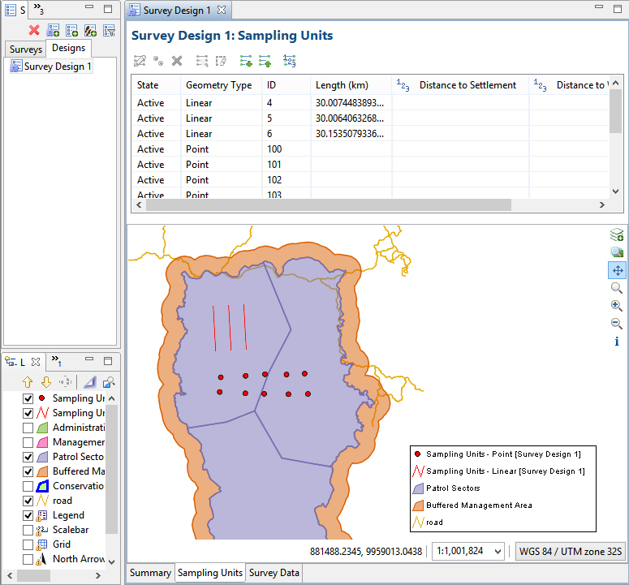
Sampling Units
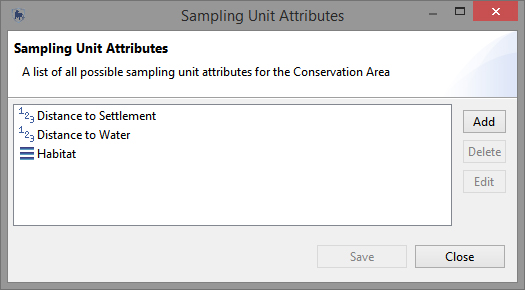
Sampling Unit attributes are created in the same way as Data Model attributes.
Sampling Unit attribute data types can be: numeric, text or list.
Survey Data Tab
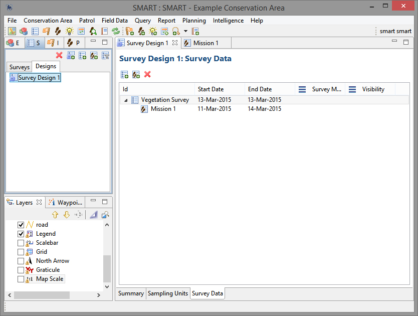
In the survey data tab users can create new Surveys or Missions. Double clicking on the Mission will open the mission editor window.
A Survey can be created after a Survey Design has been developed. A survey consists of a Survey name and a date range.
A Mission is the final element in the workflow and is assigned to be part of a Survey which is then part of a Survey Design.
Survey Design --> Survey --> Mission
A wizard will guide users through the steps needed to create a Mission. Once the Mission wizard has completed, the next steps are to populate the mission with data collected during that mission.
The Mission editor window shares the same design as the Patrol editor window allowing users already familiar with Patrol data entry to populate Missions.
Summary Tab
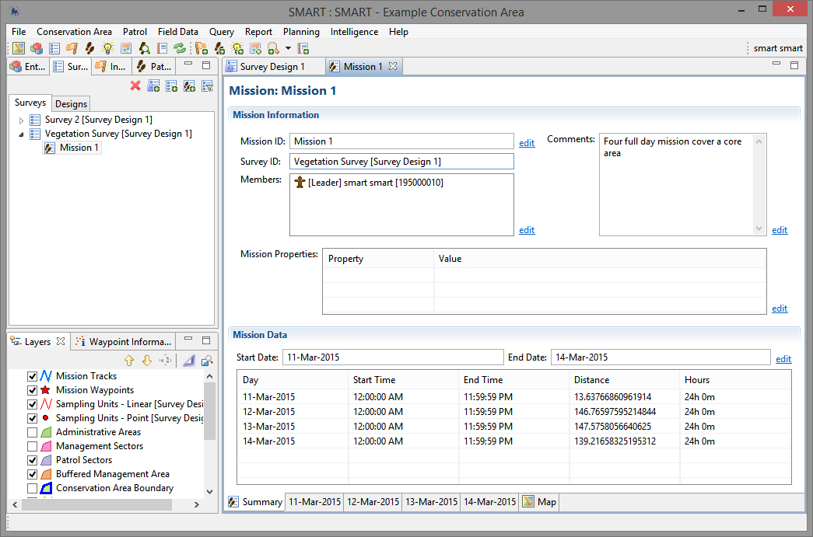
Mission ID - Name or ID of the Mission
Survey ID - The Name or ID of the Survey
Members - Members / Employees of the Conservation Area that took part in the Mission
Mission Properties - Mission properties or attributes associated with the Mission
Comments - Comments or description providing extra information about the mission
Start Date - start date for the Mission
End Date - end date for the Mission
Mission Date Tabs
Each day of the Mission will have its own tab. The day tab is where the survey information will be entered. The process of data entry for Ecological Records follows the same process as data entry for patrols. The date tabs are where the data entry for the Ecological Records takes place. Users will need to select a specific date tab to enter the data entry window.
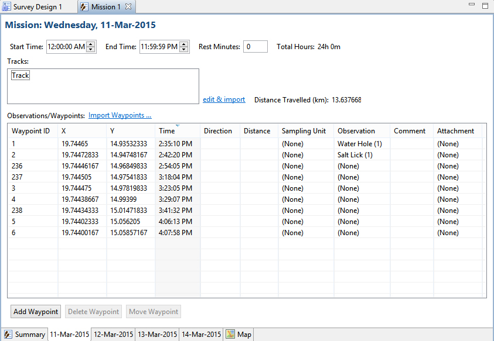
Start Time - the start time for the Mission
End Time - the end time for the Mission
Rest Minutes - the number of minutes of rest taken by the mission members
edit & import - open the Mission track editor for importing and editing GPS track data
Import Waypoints - imports GPS, GPX or CSV data
Add Waypoint - allows for a manually created waypoint
Delete Waypoint - deletes a waypoint
Move Waypoint - moves the waypoint to another day. It does not move the location of the waypoint.
Track Editor
The Track Editor allows SMART users to import, modify and delete Mission tracks or portions of tracks.
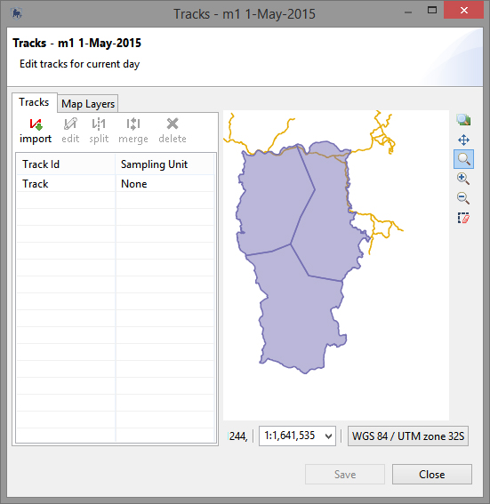
| Icon | Description |
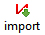 |
Imports new track information directly from a GPS device or from a saved GPX file |
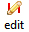 |
Edits the track point information allowing users to edit individual coordinates |
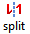 |
Splits the selected track at a selected location |
| Merges two track segments into a single segment | |
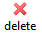 |
Deletes a track or segment of track |